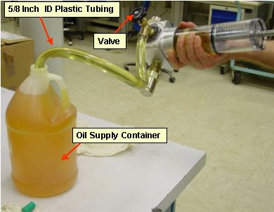

Operating Documentation
Direction 5307452-8EN, Rev# 4
Discovery CT750 HD Service Methods - Adv
Operating Documentation |
| Required Persons | Preliminary Reqs | Procedure | Finalization |
|---|---|---|---|
| 1 | Timing Not Applicable | 30 mins | 30 mins |
This document provides the necessary steps to set the oil level in the tube heat exchanger's bellows.
The tube heat exchanger bellows are set to a coolant to air ratio of 20 to 40 at room temperature. The air allow for expansion of the oil coolant as the X-Ray tube heats up.
| Last Revised: | 22 October 2008 |
| Item | Qty | Effectivity | Part# | Manufacturer | |
|---|---|---|---|---|---|
| Oil Compensation Kit | 1 | - | 5125182 | - | |
| Item | Qty | Effectivity | Part# | Manufacturer |
|---|---|---|---|---|
| Transformer Oil (1 gallon) | - | T0552G, T0552F, or 2164148 | - | |
| Dry Wipes | - | - | - | |
| Latex Gloves (optional) | - | - | - |
| POTENTIAL FOR BURNS. | |
| SEVERE PERSONAL INJURY CAN OCCUR VIA BURNS FROM CONTACT WITH HOT OIL. | |
| DO NOT SERVICE WHILE TUBE AND OIL IS HOT (SEE REQUIRED
CONDITION BELOW). LARGE AMOUNTS OF AIR IN THE TUBE HEAT EXCHANGER CAN CAUSE IQ ARTIFACTS OR SCAN ABORTS. NEVER OPEN THE OIL COMPENSATION TOOL'S VALVE WHILE IT IS CONNECTED TO THE GANTRY. |
| Condition | Reference | Eff |
|---|---|---|
For Performix Pro VCT 100 X-Ray Tube and Performix HD X-Ray Tube | - | - |
Recommend procedure completed by trained personnel. | - | - |
No X-Ray exposures have been made for AT LEAST one (1) hour. Tube casing and oil hoses are cool to touch. | - | - |
No tube heat exchanger oil related issues such as oil loss or excessive air in the tube heat exchanger. | - | - |
With apparatus valve in open state, push in piston until it stops, forcing air out of apparatus.
Attach hose onto apparatus valve spout.
Insert open end of hose into a filled Transformer Oil container.
Slowly pull apparatus piston back as far as you can to fill cylinder with oil
| NOTE: | It is acceptable if some air enters. |
| NOTE: | The piston handle may need to be twisted slightly while pulling it back. |
Tip apparatus so that piston handle is up, forcing any air to rise to top of cylinder.
| NOTE: | Small amounts of oil may leak from small hole at end of apparatus, near the handle. |
Illustration 1: Filling Compensation Tool With Oil

If there is air present in cylinder, complete the following steps to bleed air from cylinder.
Lay apparatus flat. The air will rise to valve area by the sight glass.
Push piston all the way in again, forcing out all air and liquid, then slowly pull piston back.
| NOTE: | Usually this will remove all of the air; however, a few iterations may be necessary. |
Illustration 2: Bleeding Compensation Tool of Air

With cylinder full and air free, close valve tightly.
Hold apparatus above oil container, and slowly pull hose off end of apparatus, drain oil into container. Wipe any residual oil from apparatus with dry wipes.
| Potential for Personal Injury | |
| An energized gantry presents mechanical (rotational) and electrical hazards. | |
| If this procedure execution is NOT due to another Service Procedure, complete the following preparation steps. | |
Move table to home position.
Remove gantry right side cover.
Turn OFF [HVDC ENABLE] , [AXIAL DRIVE ENABLE] and [120 VAC] switches on Service Switch panel.
Remove scan window, gantry left side cover, gantry top covers and gantry front cover.
Rotate gantry so tube rests at 3 o'clock or 4 o'clock positions.
Engage gantry rotational lock.
Remove tube oil pump to tube quick-disconnect safety mechanism bolts and uncouple the quick-disconnect.
| Apparatus can be used on oil-based systems only. | |
| Use of this apparatus on water-based cooled systems (blue hoses) will cause unknown system damage. | |
Connect apparatus male disconnect to tube oil pump female disconnect.
Connect apparatus female disconnect to tube male disconnect. The handle should angle upward.
Illustration 3: Compensation Tool Connected

| Never open the apparatus valve while it is connected to the gantry. | |
Keeping handle higher than rest of apparatus, push down piston's handle until it stops. This fills the heat exchanger and bellows with oil, while keeping any small traces of air at the top of the cylinder.
| NOTE: | In rare cases, it may be possible to push the piston such that it almost empties the apparatus. For these type of cases, disconnect the apparatus, fill it with oil per Apparatus Preparation instructions, and push more oil in until the bellows are full. |
With bellows full of oil, note volume of oil remaining in apparatus cylinder.
| NOTE: | If you are able to push the piston in and the piston bounces back 5 units or more, this is a sign that there is air in the cooling circuit. Perform Tube Oil Cooling System Air Removal |
Slowly pull back on apparatus handle so that 30 units of oil are removed from heat exchanger bellows. Use bottom of piston (where oil and piston meet) as measurement reference line.
| NOTE: | In the rare case that there is not enough room in the apparatus cylinder to pull 30 units of oil from the system, perform the oil removal in two steps, such as 15 unit each. |
Uncouple apparatus male disconnect from tube oil pump female disconnect.
Uncouple apparatus female disconnect from tube male disconnect.
Connect tube oil pump female disconnect to tube male disconnect.
Empty apparatus syringe, clean apparatus and prepare for air shipment/storage.
If procedure execution was due to another service procedure, return to associated Service Procedure.
If procedure execution was not due to another Service Procedure, perform the following steps:
Restore tube oil pump to tube quick disconnect safety mechanism. Torque M6 bolts to the following values:
| 5.8 ft-lb | 7.9 N-m | 70 in-lb | 80.8 kg-cm |
| NOTE: | If the safety mechanism rotates in relation to the quick-disconnect, tighten slowly until it stops rotating. |
| NOTE: | Do not over-torque the M6 bolts. Doing so can cause the quick-disconnect to leak. |
Disengage gantry rotational lock.
Install gantry front cover, top covers, left side cover, and scan window.
Turn ON [120 VAC] , [AXIAL DRIVE ENABLE] , and [HVDC ENABLE] switches on Service Switch panel.
Press [E-STOP RESET] on Service Switch panel. Wait until scanning hardware is successfully reset.
Install gantry right side cover.